La etiqueta "input" se trata del elemento de entrada de datos, en este elemento el atributo más importante con diferencia es "type", este elemento cuenta con multitud de valores, la característica más resaltante del elemento "input" es que puede cambiar su forma según el valor del atributo "type", este elemento se utiliza para crear la mayoría de los widget de un formulario.
-
Text: Traducido como Campos de texto de una sola línea, para definir esta forma el valor del atributo "type" tiene que ser "text", otra forma de lograr que el input tome esta forma es ignorar el atributo "type" por completo ya que este es el valor predefinido del input.
Nota: Este valor también se utilizará en caso de que el navegador desconozca el valor del atributo "type".
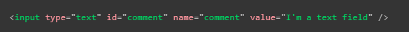
Nota: La limitación de un campo de texto de una sola línea es que cualquier salto de línea que se ingrese será eliminado al momento de enviar los datos.
-
password: En esta forma de "input" se visualiza un cuadro de texto con la particularidad de que el texto ingresado en este no es visible, permanece oculto representado por puntos o asteriscos, en sí esta es la única característica distintiva de esta forma de "input", la cual es únicamente una función de la interfaz de usuario ya que en sí no incluye ningún tipo de característica de seguridad adicional, en los datos ni en el envío de estos.
Para la seguridad lo más recomendable es subir la página (al menos la de login) en un servicio HTTPS, ya que este tipo de conexión web cifra los datos antes de ser enviados, si de otra manera la página se encontrara en un formato con conexión HTTP los datos serían enviados sin encriptar, lo que los expondría a poder ser interceptados por terceros.
Para definir la utilización de este tipo de "input" el valor del atributo "type" tiene que ser igual a "password".
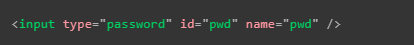
Nota: Los navegadores reconocen la implementación de un campo de contraseña y tienen notificaciones que alertarán a los usuarios si están por enviar un formulario que no cumple con los requerimientos de seguridad adecuados o no incluyen conexiones HTTPS.
-
Hidden: Traducido como "contenido oculto" un input de tipo "hidden" consiste en un elemento oculto para los usuarios, por lo tanto nunca se mostrará en pantalla ni mucho menos el usuario podrá enfocarse en este, este elemento no solo puede almacenar datos sino que estos son enviados junto a la información del formulario.
Ya que el usuario nunca interactuará con este elemento su valor puede ser definido a través de JavaScript, es importante tener en cuenta que al tratarse de un elemento oculto este no debe estar vinculado a ninguna "etiqueta" y por lo mismo ya que no se muestra en pantalla es importante definir los atributos "name" y "value".
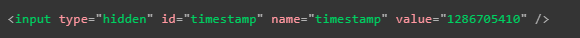
-
Checkbox: Este tipo de "input" se define con el valor "checkbox" en el atributo "type" y se trata de un elemento verificable, lo que significa que su estado puede cambiar dependiendo de si se encuentra verificado o no, otra característica es que al enviarse el formulario únicamente se envían los campos que se encuentren verificados, si el elemento no lo está, no será enviado absolutamente ningún dato.
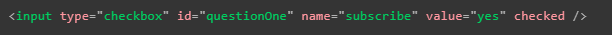
En este tipo de elementos es importante mantener una buena estructura de código para asegurar la accesibilidad de la página, los elementos que estén relacionados deben encontrarse en un mismo conjunto de campos con una leyenda que brinde una descripción general de la lista, por lo general cada conjunto de elementos "label/input" debe encontrarse en su propio elemento de lista (li).
En este tipo de "input" generalmente los elementos "label" se incorporan directamente antes o después del "input" y por último las instrucciones para el conjunto de checkbox generalmente es el contenido de la leyenda.
Nota: se puede crear un checkbox que esté verificado por defecto utilizando el atributo "checked".
Nota: si el elemento se encuentra verificado pero no tiene un valor definido este se enviará como "on".
Nota: Es importante recordar que cualquier "etiqueta" o elemento relacionado con el "checkbox" debe usar el mismo nombre en el atributo "name".
A continuación se muestra un ejemplo de código de este elemento:
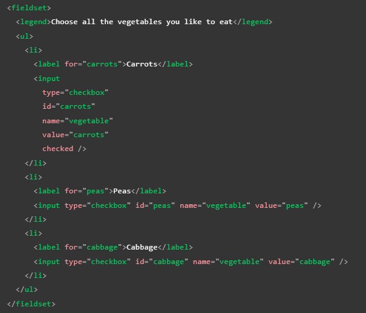
Nota: por último muchos desarrolladores consideran al "checkbox" como un botón de alternancia, (ya que su visualización cambia al estar o no verificado) por lo que aplicando estilos CSS para presentarlo como tal, ve un ejemplo Aquí.
-
Radio: El botón de radio es definido con un valor "radio" en el atributo "type", esta etiqueta puede parecer similar al "checkbox" sin embargo su funcionamiento es diferente ya que está pensado para que el usuario únicamente seleccione uno de varios elementos, conceptualmente funciona como una lista de "checkbox" en los que solo un elemento puede estar marcado a la vez, para lograr este funcionamiento hay que relacionar los diversos elementos "radio" con un mismo valor en el atributo "name", al hacer esto se considera que estos elementos conforman un grupo.
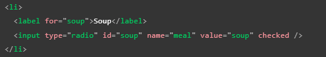
Al enviarse el formulario únicamente se envía el elemento que esté verificado, si se da el caso de que ninguno de los elementos está verificado no se enviará ningún dato desde el grupo de elementos.
Nota: A diferencia del "checkbox" el elemento "radio" una vez verificado algún elemento este no puede ser desmarcado por el usuario al menos que restablezca el formulario.
-
Botones: Los valores del atributo "type" en el elemento "input" son tan versátiles que incluso puede llegar a mostrarse y actuar como un botón, en particular el "input" tiene tres valores con los que actúa como botón, los cuales son los siguientes:
-
Submit: Esta modalidad tiene específicamente la función de enviar los datos de un formulario, se define con el valor "submit" en el atributo "type"
Nota: En los elementos "button" omitir o utilizar un valor desconocido en el atributo "type" genera un botón de tipo submit, ya que es la función por defecto.
-
Reset: Restablece todos los widgets del formulario a su valor predeterminado, se define con un valor "reset" en el "type" del elemento
-
Button: No tiene una función definida, se trata de un botón personalizable con JavaScript, se define con el valor "button" en el atributo "type"
No confundir el "input" con el elemento "button" el cual puede realizar las mismas funciones ya que este elemento se especializa en crear botones, no obstante se diferencian en que el elemento "button" puede albergar texto y elementos de formato de texto en su interior, por otro lado en el input el texto del botón se define con el atributo "value" por lo que no puede contener estos elementos, en cambio la ventaja del "input" es que es más fácil de diseñar, a continuación se muestran ejemplos de cada caso con ambos elementos:
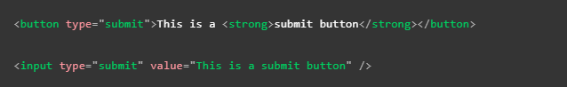
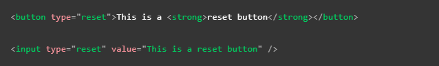
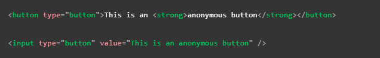
Nota: la visualización de ambos elementos es básicamente la misma.
-
Image: Este tipo de "input" mezcla las características de los elementos "img" y "button", por lo tanto se visualiza igual que un "img" con la característica de que se comporta como un botón submit al hacer clic en este, se define con un valor "image" en el atributo "type", por sus características soporta todos los atributos de un elemento "img" así como los compatibles con los botones de un formulario.
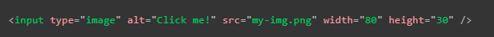
Este elemento no envía los datos de un formulario, en su lugar envía las coordenadas del lugar de la imagen en el que se realizó el clic, para esto el valor de las coordenadas se define en base al eje X y el eje Y dentro de la imagen, tomando como el punto inicial (0X 0Y) la esquina superior izquierda de esta.
Por ejemplo si se realizó un clic en las coordenadas x=123 y=456 de la imagen entonces los datos se enviarían de la siguiente forma:
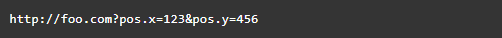
-
File: Este tipo de "input" tiene la función de recibir un archivo para enviarlo junto con los datos de un formulario, para definirlo como tal es necesario utilizar el valor "file" en el atributo "type", otros atributos muy utilizados en este elemento son:
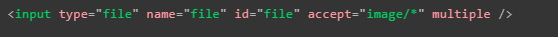
Nota: En algunos teléfonos este atributo puede aceptar fotos, vídeos y audio tomados directamente con el dispositivo, en este caso se añade información de la captura al atributo de aceptación de la siguiente manera:
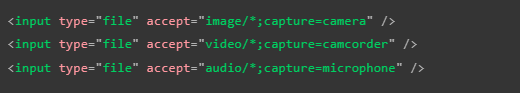
-
Email: Se trata de un tipo de "input" más moderno ya que fue introducido en HTML5, consiste en un campo de texto con una validación con respecto al tipo de dato que recibe, está configurado para aceptar únicamente direcciones de correos electrónicos, cualquier texto ingresado que no cumpla con el formato de uno será automáticamente rechazado, se define como tal aplicando un valor "email" en el atributo "type".
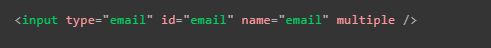
Nota: Utilizando el atributo multiple puede ser posible para el usuario ingresar varias direcciones de correo a la vez (separados entre sí por comas).
En este tipo de elementos la validación de los datos es ejecutada automáticamente en el lado del cliente por el navegador antes de enviar los datos, lo cual ahorra tiempo y consultas al servidor, no obstante las validaciones ejecutadas en el lado del cliente no son seguras, ya que son muy fáciles de desactivar, por lo tanto es indispensable implementar validaciones exhaustivas de los datos en el servidor, para evitar vulnerabilidades que terceros malintencionados puedan aprovechar.
Nota: La validación del correo por parte del navegador no comprueba que el correo existe en realidad.
-
Search: Este tipo de "input" también es reciente y al aplicarse muestra un cuadro de texto especializado en realizar búsquedas en la página, para utilizar este tipo de elemento es necesario aplicar el valor "search" en el atributo "type", un cuadro de búsqueda se diferencia de un cuadro de texto normal principalmente en la apariencia de este, ya que suele mostrar características particulares como:
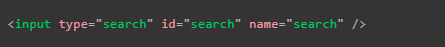
Otra característica positiva de estos es que los datos del atributo "search" se guardarán automáticamente para facilitar búsquedas dentro de la página.
-
Tel: Se trata de un tipo de "input" especializado en recibir números de teléfono, su efecto aplica para aquellos dispositivos que utilicen un teclado dinámico, ya que al seleccionar el elemento automáticamente se muestra un tablero de números.
No cuenta con ninguna validación respecto a los datos ingresados en este ya que existen muchos formatos de números de teléfonos en el mundo, por lo tanto también puede recibir letras, cuenta con un atributo llamado "pattern" el cual permite definir los formatos de número de teléfono que se desea aceptar, para aplicar este tipo de "input" se utiliza el valor "tel" en el atributo "type".
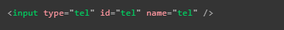
-
Url: Este tipo de "input" se define con un valor "url" en el atributo "type", este elemento cuenta con varias validaciones ejecutadas en el lado del cliente las cuales rechazarán cualquier dirección que no cuente con un protocolo HTTP o si la dirección tiene un formato incorrecto.
Al igual que con el "input" "email" estas validaciones son inseguras ya que pueden ser desactivadas fácilmente, por lo que lo mejor siempre es implementar validaciones en el servidor que comprueben los datos recibidos.
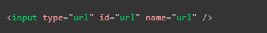
Nota: Estas validaciones del lado del cliente no verifican que la dirección ingresada realmente existe.
-
Number: Este "input" muestra un campo de texto con la validación de exclusivamente aceptar números, también suelen mostrarse unas flechas ascendentes y descendentes en el costado derecho del recuadro, estas flechas son otra alternativa para ingresar o modificar el texto sin el uso del teclado, ya que permiten aumentar o disminuir los números.
En este elemento se pueden usar los atributos "min" y "max" para definir los valores mínimos y máximos del elemento respectivamente, también se puede usar el atributo "step" para definir en qué cantidad se realizará el aumento y disminución de las flechas, de forma determinada el valor de este atributo es "1", para incluir números flotantes se puede ingresar un valor "any" en este.
Por ejemplo:
-
Control numérico restringido entre el 1 y el 10, con un incremento y reducción en sus botones de 2.
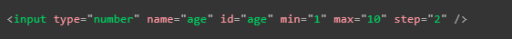
-
Control numérico restringido entre el 0 y el 1 con un incremento o reducción establecido de 0.01.
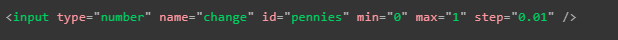
Nota: este elemento es útil en aquellos casos en los que se ingresen números dentro de un rango establecido, si el número se encuentra dentro de un rango ilimitado o demasiado grande es mejor optar por el elemento "tel".
-
Range: Se trata de otra forma de seleccionar un número, la cual consiste en la implementación de un menú desplazable, el cual abarca un rango de valores definibles, se trata de un elemento menos preciso que los campos de texto por lo que se utiliza en aquellos casos en los que el valor exacto no es muy importante, se define este elemento aplicando un valor "range" al atributo "type".
Al utilizar este tipo de elemento es muy importante definir los atributos "min" "max" y "step" ya que cada uno define el valor mínimo, el valor máximo y el valor incremental del elemento respectivamente.
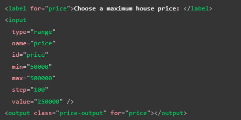
En este ejemplo se utiliza el atributo "value" para definir el valor inicial del elemento.
El elemento "range" no provee de un elemento visual que ayude a conocer el valor actual del elemento por esto es que suele acompañarse por el elemento output el cual permite mostrar un valor de entrada o salida de un elemento dentro de cualquier otro, este elemento se caracteriza por funcionar igual que un "label", es decir con el atributo "for" es posible relacionarlo con los elementos que generan la salida.
Nota: para que el elemento output funcione es necesario comandarlo con JS, he aquí un ejemplo:
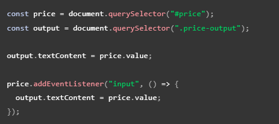
-
Date y Time: En esta ocasión no se trata de un tipo de "input" en particular, sino que en su lugar se refiere a un conjunto de "inputs" de los cuales cada uno cumple con el rol de manejar los datos referentes a la hora y fecha proveída por el usuario, en este caso existen varios tipos de "input" para un mismo tipo de función ya que en realidad existen diversas formas de expresar la hora y fecha, por lo tanto cada tipo cuenta con características propias que lo hacen adaptarse a un formato hora/fecha en específico.
Los elementos Hora/fecha son:
-
Datetime-local: crea un widget para mostrar y elegir una fecha con hora sin información de zona horaria específica
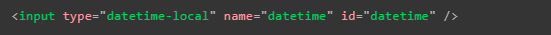
-
Month: crea un widget para mostrar y elegir un mes con un año
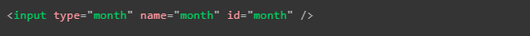
-
Time:
crea un widget para mostrar y elegir un valor de tiempo. Si bien la hora puede mostrarse en formato de 12 horas, el valor devuelto está en formato de 24 horas
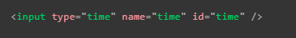
-
Week: crea un widget para mostrar y elegir un número de semana y su año
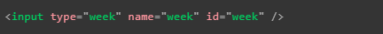
Nota: En este formato la semana comienza el lunes y termina el domingo.
Nota: Un aspecto que vuelve complejo el uso de este tipo de etiquetas es el tema de la compatibilidad ya que se tratan de etiquetas HTML5.
Restricción de valores fecha/hora: Todos los controles de fecha y hora se pueden restringir mediante los atributos "min" y "max", y se pueden restringir aún más mediante el atributo "step" (cuyo valor varía según el tipo de "input"), tal y como se puede apreciar a continuación:
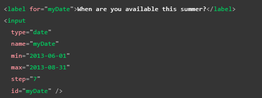
Nota: Este elemento también puede adoptar el atributo "step" el cual define en qué cantidad incrementará o se reducirá el valor cuando se usen controles de entrada (flechas arriba y abajo).
-
Color: Esta es otra forma de "input", puede crear este elemento utilizando el valor "color" en el atributo "type". Los colores son siempre un poco difíciles de manejar. Hay muchas formas de expresarlos: valores RGB (decimales o hexadecimales), valores HSL, palabras clave, etc.
Su funcionamiento consiste en hacer clic en un control de color, generalmente se muestra la funcionalidad de selección de color predeterminada del sistema operativo.
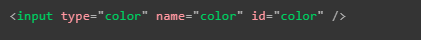